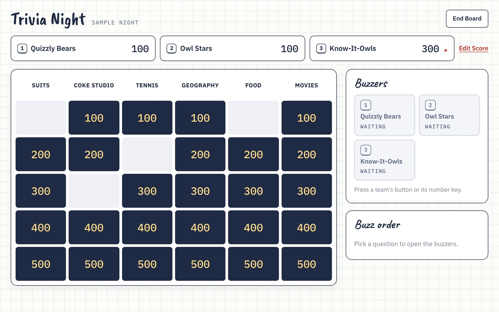
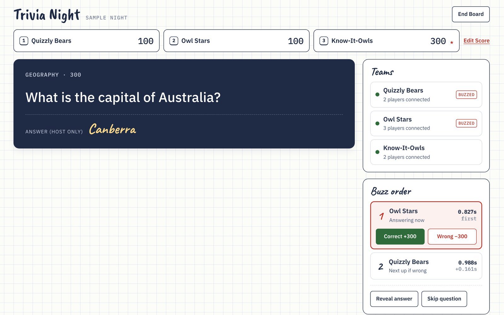

Trivia Night
A Jeopardy-style game for hosting trivia with friends and family over a video call. Everyone buzzes from their own phone, and the questions are drafted by me and Claude.
- Built with
- Claude, Firebase, Cloudflare


The problem
Most of my friends live far away now. We still get on video calls, but a call on its own drifts into catch-up and goes quiet. Trivia nights fix that: they give everyone something to do together, a reason to show up, and a lot of laughing along the way.
Running trivia over a video call is clumsy, though. If one person shares a slideshow, everyone stares at one screen and shouts answers over each other, and nobody can tell who was really first. I wanted it to feel like a real game show: a board everyone knows, a buzzer in every hand, and a fair answer to "we were first!"
What I built
Trivia Night has three parts. Build a board: six categories with five questions each, worth 100 to 500 points, written by hand or drafted with AI and then edited. Host a live game: the host creates a room and pastes a link into the call's chat. Join a game: players open the link on their phone, make or join a team, and their phone becomes their buzzer.
During a game, the host picks a tile, the question appears on everyone's phone, and buzzers open straight away. Buzzes are ranked to the millisecond, so everyone can see who was first and by how much. The host listens to the spoken answer on the call and taps Correct or Wrong. A wrong answer loses the points and passes the turn to the next team in line. When a board ends, the host can start a new one in the same room and carry the scores over.
What I left out was just as deliberate. There is no Final Jeopardy, no Daily Doubles, no sounds, no timer and no picture questions. I also chose not to let AI judge answers. The host hearing an answer and making the call is part of the fun, and the conversation on the call is the point. Each cut kept the first version small enough to finish and play.
How it works
The site is plain HTML, CSS and JavaScript on GitHub Pages, with no build step. A live game runs through a real-time database (Firebase). The host's browser runs the game rules and publishes what everyone should see, such as scores, the open question and the buzz order. Players' phones only ever write two things: which team they're on, and their buzz.
Fairness was the hard part. Every buzz is stamped with the server's time when it arrives, so no one's phone clock decides who was first. Database rules check every write: one buzz per team per question, only while a question is open, and only for your own team. Answers stay on the host's screen until they're revealed.
For AI drafting, the host types a theme for a category and gets five questions back, from easy to hard. Questions Claude isn't sure about come back with a "Check this" note so I can verify them. The request goes through a small server (a Cloudflare Worker) that checks I'm signed in with Google before calling Claude, so the API key never reaches the browser and only I can use it.
How I built it
I treated it like a product, with Claude as my engineering partner. I started with a one-page spec: the rules, who it's for, and a "not in v1" list. Then I mocked up the main screens before any code. I split the build into steps that each worked on their own: a one-screen game, the board builder, live rooms, sign-in with an online board library, and then AI drafting.
I made the product calls, such as the rules, what to cut, the names of buttons and how each screen flows. Claude wrote the code and the tests, and I tested every step in the browser and on phones before moving on. The game rules are covered by 31 automated tests, the database's security rules by 11 and the AI server by 7, so changing a rule late didn't mean breaking something else.
What happened
The first live test on real phones changed the rules I'd been most sure about. My spec had a countdown timer and had the teams picking the tiles. Both went. Buzzers now stay open until the host closes the question, and the host always picks the tile while teams call out what they want. The test also showed that "who was first?" needed a clear answer, so buzz times now show to the millisecond on every screen.
Later rounds of testing added the ability to play several boards in one room with scores carried over, and simpler End Board and Close Room controls for the host. The first real game night with friends is coming up, and I'll add what happens here.
What I learned
- One real playtest taught me more than the spec did. The rules I was surest about were the first to change once people were holding phones.
- A short spec and a "not in v1" list kept the build focused. With AI, adding features is easy, so deciding what not to build matters more.
- AI tools change under you. A newer Claude model rejected a request format the code relied on, and the fix was to read the actual error and add a fallback rather than assume the setup would stay the same.
What's next
First, a real game night, and then tuning the AI prompt based on the questions it drafts. After that, the ideas I parked for v1: a Final Jeopardy round, sounds, and picture questions.